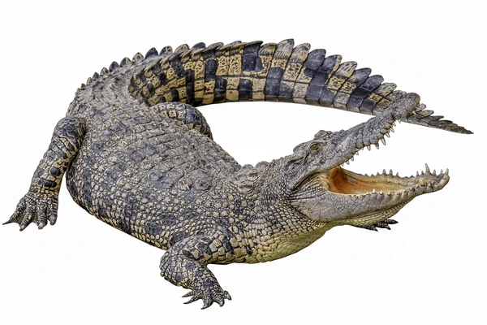
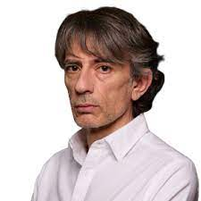
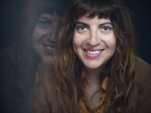
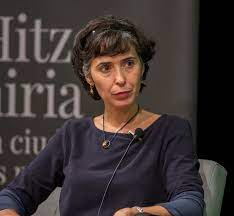

Animales
Las más bellas y encantadoras de las primeras teteras de loza sin esmaltar que llegaron a Europa e Inglaterra se fabricaron en Yixing, en la provincia china de Jiangsu, donde los depósitos de arcilla varían en color desde el marrón oscuro hasta los rojos terrosos, marrones oscuros intensos, terracota intenso, ocre amarillo y óxido ámbar rojo. Aquí se fabrican teteras desde el año 2500 a. C. y hoy en día son caras y muy valoradas. Están construidos con losas de arcilla, sin utilizar moldes, y se dice que son los mejores recipientes para preparar té negro, oolong y té oscuro (pu-ehr). Hoy en día, las teteras Yixing están ampliamente disponibles y se recomienda que cada tetera solo se use para preparar un té o tipo de té en particular, por ejemplo, un oolong de roca de Fujian, un té oscuro de Yunnan o un té negro de la provincia de Anhui. Esto se debe a que la arcilla sin esmaltar es muy porosa y retiene el aroma del té preparado en ella. Por lo tanto, preparar un té o tipo de té diferente afectaría negativamente el sabor y el aroma del próximo té preparado en su interior. Al usarlo solo para un té o un tipo de té, la tetera acumula una pátina de ese té dentro de la tetera y, por lo tanto, nunca debe lavarse con detergente, etc. Después del uso, solo enjuague con agua caliente y escurra listo para usar en la próxima ocasión.
Paragram amb text
Aixo es
l'espai
necesari.
Aqui tenemos la quota de wikipedia
Les tortugues (Testudines), conegudes igualment com a testudins o quelonis, són un ordre de rèptils que tenen
el tronc tancat en una closca formada a partir de costelles soldades a altres estructures.
Les tortugues modernes es divideixen entre criptodirs i pleurodirs, segons el pla en el qual flexionen el coll.
Texto en negreta
Texto en cursiva
Texto marcado y subrallado
Koala
Tigre
 A paragraph with a floating image. A paragraph with a floating image. A paragraph with a floating image.
Las patatas bravas, denominadas también patatas a la brava o papas bravas, son una preparación típica de los bares de España que consiste en patatas cortadas en dados grandes, fritos en aceite de oliva y aderezados con salsa brava, la cual es una salsa picante. Las patatas bravas se sirven calientes como tapa o aperitivo, acompañando una caña o copa de vino. Su origen está en la ciudad de Madrid, 1 aunque hoy en día se pueden encontrar fácilmente en todas las regiones del país. 2 Es, además, una de las tapas más asequibles del menú, debido al bajo coste de sus ingredientes. La salsa brava incluye pimentón picante, cebolla y harina de trigo o vinagre, aunque la receta varía notablemente según el lugar
Enlace externoLicenciado en Filosofía, trabaja en el campo del periodismo y la comunicación. Fue corresponsal del periódico La Región y después jefe de prensa de la Secretaría General de Emigración hasta 2008. Trabajó en la Cadena SER, en la revista Jot Down, y en El Progreso. Participante amateur en diferentes publicaciones colectivas, obtuvo con su primera novela el VI Premio Nicomedes Pastor Díaz. Sus libros abundan en la metaliteratura y en la derrota. Desde 2020 es miembro de la sección de Pensamiento del Consejo de la Cultura Gallega. En 2013 publica El váter de Onetti en castellano, al no encontrar editores que quisieran publicarlo en gallego, idioma en el que estaba escrito originalmente.1 En 2018 publica su primera gran novela, Salvaje Oeste, que ficciona el poder en la España del Siglo xxi.2 En 2020 publica una nueva novela impregnada de su fino estilo literario, que titula Rewind, a pesar de las dudas de sus editores con respecto al título.3 
Laura Lynn Fernández Piña (Torreón, Coahuila, 11 de junio de 1971) es una mercadóloga y política mexicana, afiliada al Partido de Revolución Democrática. Fue diputada local por el distrito 10 de Quintana Roo de 2008-2011, Secretaria de Turismo de Quintana Roo de 2013-2016, durante el gobierno de Roberto Borge Angulo. Y alcaldesa de Puerto Morelos de 2016-2021. Desde el 6 de junio de 2022 es diputada federal al Congreso de la Unión, por el Distrito 4 de Quintana Roo. 
Licenciada en Historia por la Universidad de Navarra (1997), amplió estudios en Estados Unidos, país en el que también ha desarrollado su carrera profesional como profesora e investigadora. Cursó una maestría en Literaturas Hispánicas (1999) y un doctorado en Literatura Española y Latinoamericana (2003), ambos en Universidad de Carolina del Norte en Chapel Hill (Carolina del Norte), siendo profesora asociada (1999-2001) de la misma. En 2003 se traslada a la College of Arts and Sciences de la Universidad de Lehigh (Pensilvania), donde a lo largo de trece años compagina su trabajo de docencia, como profesora asociada (2003-2008) con la gestión académica en la dirección del Humanities Center (Centro de Humanidades) (2008-2014) y de Iniciativas Internacionales (2013-2014) del College of Arts and Sciences.2 